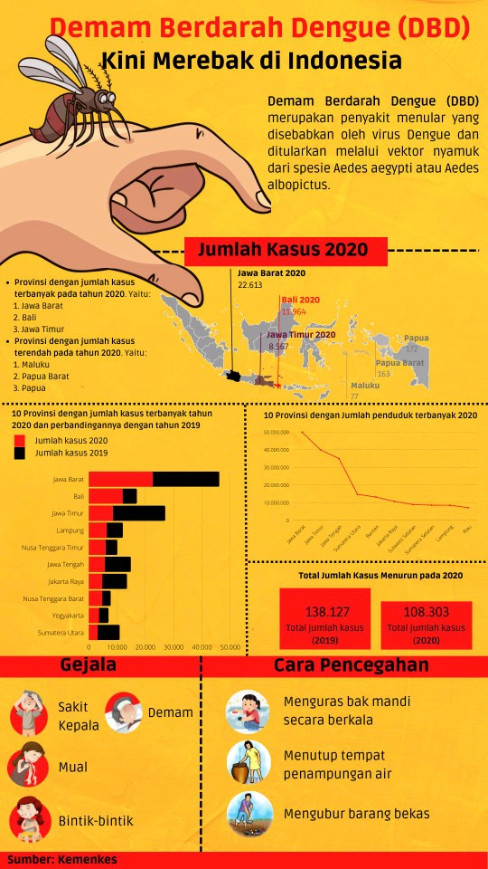

Project information
- Category: Data Visualization
- Skills: Ms. Excel, Adobe Illustrator & Canva
- URL: Profil Kesehatan Indonesia - Kemenkes
- Desc: Final project by Tempo Institute (Digital Talent Scholarship) 2022
Infografis DBD 2019-2020
Infografis merupakan media informasi yang disajikan secara visual yang berisi teks dan data dengan perpaduan bagan, grafik, dan lain-lain agar mudah dipahami. Pada Infografis ini, data berasal dari Kemenkes dengan topik Demam Berdarah Dengue (DBD). Sumber data tersebut akan diolah menggunakan formula yang dibutuhkan, kemudian menganalisisnya dengan PivotTable secara ascending dan descending untuk mengurutkan data menggunakan Ms.Excel. Adapun jenis chart yang digunakan yaitu:
- Maps: Untuk menampilkan wilayah tertentu dengan menggunakan warna yang kontras sebagai pembeda, yang bertujuan untuk menunjukan jumlah kasus DBD terbanyak dan terendah tahun 2020 berdasarkan provinsi.
- Diagram Batang: Untuk menampilkan hubungan antar variable yang menunjukan perbandingan dari kumpulan data yang berbeda, tujuannya untuk perbandingan 10 provinsi dengan jumlah kasus terbanyak pada tahun 2019 dan 2020.
- Diagram garis: Untuk menampilkan data kontinu atau terhubung, seperti jumlah penduduk.
Dibawah ini merupakan infografis yang berjudul "Demam Berdarah Dengue (DBD) Kini Merebak di Indonesia". 
Direktur Pencegahan dan Pengendalian Penyakit Tular Vektor dan Zoonotik Kementerian Kesehatan Siti Nadia Tarmizi menyebutkan, ada 100-500 kasus yang ditemukan setiap harinya. Disebutkan bahwa provinsi yang dilaporkan memiliki jumlah kasus terbanyak adalah Jawa Barat dengan 22.613 kasus. Namun jumlah kasus tahun 2020 tergolong rendah jika dibandingkan dengan tahun 2019 yang mencapai 138.127 kasus. Disusul jumlah kasus terbanyak yaitu untuk provinsi Bali sebesar 11.964, berbeda dengan tahun 2019 sebesar 4979, yang artinya naik secara signifikan pada tahun 2020. Kemudian disusul lagi dengan provinsi Jawa Timur pada tahun 2020 sebesar 8.567, jika dibandingkan dengan tahun 2019 mencapai 18.397.